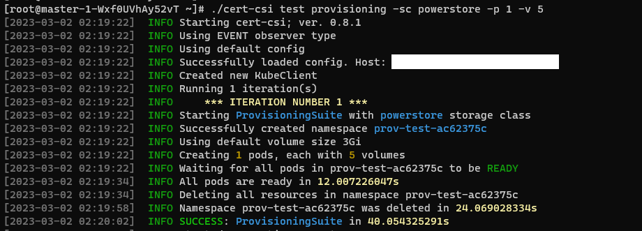
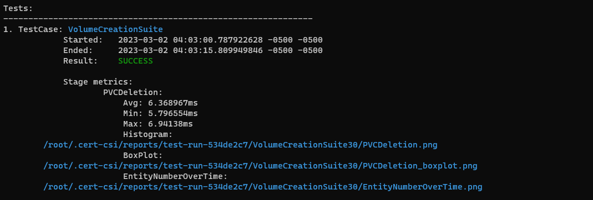

Cert-CSI
Cert-CSI is a tool to validate Dell CSI Drivers. It contains various test suites to validate the drivers.
Installation
There are three methods of installing cert-csi.
- Download the executable from the latest GitHub release.
- Pull the container image from DockerHub.
- Build the exectuable or container image locally.
The exectuable from the GitHub Release only supports Linux. For non-Linux users, you must build the
cert-csiexecutable locally.
Download Release (Linux)
- Download the latest release of the cert-csi zip file.
curl -LO https://github.com/dell/cert-csi/releases/download/v1.3.1/cert-csi-v1.3.1.zip
- Unzip the file.
unzip cert-csi-v1.3.1.zip
chmod +x ./cert-csi-v1.3.1
- Install cert-csi-v1.3.1 as cert-csi.
sudo install -o root -g root -m 0755 cert-csi-v1.3.1 /usr/local/bin/cert-csi
If you do not have root access on the target system, you can still install cert-csi to the ~/.local/bin directory:
chmod +x cert-csi-v1.3.1
mkdir -p ~/.local/bin
mv ./cert-csi-v1.3.1 ~/.local/bin/cert-csi
# and then append (or prepend) ~/.local/bin to $PATH
Pull The Container Image
docker pull dellemc/cert-csi:v1.3.1
podman pull dellemc/cert-csi:v1.3.1
Building Locally
Prerequisites
- Clone the repository
git clone -b "v1.3.1" https://github.com/dell/cert-csi.git && cd cert-csi
- Build cert-csi
make build # the cert-csi executable will be in the working directory
chmod +x ./cert-csi # if building on *nix machine
# uses podman if available, otherwise uses docker. The resulting image is tagged cert-csi:latest
make docker
Optional
If you want to collect csi-driver resource usage metrics, then please provide the namespace where it can be found and install the metric-server using this command (kubectl is required):
make install-ms
Running Cert-CSI
cert-csi --help
docker run --rm -it -v ~/.kube/config:/root/.kube/config dellemc/cert-csi:v1.3.1 --help
podman run --rm -it -v ~/.kube/config:/root/.kube/config dellemc/cert-csi:v1.3.1 --help
The following sections showing how to execute the various test suites use the executable for brevity. For executions requiring special behavior, such as mounting file arguments into the container image, it will be noted for the relevant command.
Log files are located in the
logsdirectory in the working directory of cert-csi.
Report files are located in the default$HOME/.cert-csi/reportsdirectory.
Database (SQLite) file for test suites is<storage-class-name>.dbin the working directory of cert-csi.
Database (SQLite) file for functional test suites iscert-csi-functional.dbin the working directory of cert-csi.
NOTE: If using the container image, these files will be inside the container. If you are interested in these files, it is recommended to use the exectuable.
Run All Test Suites
You can use cert-csi to launch a test run against multiple storage classes to check if the driver adheres to advertised capabilities.
Preparing Config
To run the test suites you need to provide .yaml config with storage classes and their capabilities. You can use example-certify-config.yaml as an example.
Template:
storageClasses:
- name: # storage-class-name (ex. powerstore)
minSize: # minimal size for your sc (ex. 1Gi)
rawBlock: # is Raw Block supported (true or false)
expansion: # is volume expansion supported (true or false)
clone: # is volume cloning supported (true or false)
snapshot: # is volume snapshotting supported (true or false)
RWX: # is ReadWriteMany volume access mode supported for non RawBlock volumes (true or false)
volumeHealth: # set this to enable the execution of the VolumeHealthMetricsSuite (true or false)
# Make sure to enable healthMonitor for the driver's controller and node pods before running this suite. It is recommended to use a smaller interval time for this sidecar and pass the required arguments.
VGS: # set this to enable the execution of the VolumeGroupSnapSuite (true or false)
# Additionally, make sure to provide the necessary required arguments such as volumeSnapshotClass, vgs-volume-label, and any others as needed.
RWOP: # set this to enable the execution of the MultiAttachSuite with the AccessMode set to ReadWriteOncePod (true or false)
ephemeral: # if exists, then run EphemeralVolumeSuite. See the Ephemeral Volumes suite section for example Volume Attributes
driver: # driver name for EphemeralVolumeSuite (e.g., csi-vxflexos.dellemc.com)
fstype: # fstype for EphemeralVolumeSuite
volumeAttributes: # volume attrs for EphemeralVolumeSuite.
attr1: # volume attr for EphemeralVolumeSuite
attr2: # volume attr for EphemeralVolumeSuite
capacityTracking:
driverNamespace: # namepsace where driver is installed
pollInterval: # duration to poll capacity (e.g., 2m)
Driver specific examples:
storageClasses:
- name: vxflexos
minSize: 8Gi
rawBlock: true
expansion: true
clone: true
snapshot: true
RWX: false
ephemeral:
driver: csi-powerstore.dellemc.com
fstype: ext4
volumeAttributes:
volumeName: "my-ephemeral-vol"
size: "8Gi"
storagepool: "sample"
systemID: "sample"
- name: vxflexos-nfs
minSize: 8Gi
rawBlock: false
expansion: true
clone: true
snapshot: true
RWX: true
RWOP: true
ephemeral:
driver: csi-vxflexos.dellemc.com
fstype: "nfs"
volumeAttributes:
volumeName: "my-ephemeral-vol"
size: "8Gi"
storagepool: "sample"
systemID: "sample"
capacityTracking:
driverNamespace: powerstore
pollInterval: 2m
storageClasses:
- name: isilon
minSize: 8Gi
rawBlock: false
expansion: true
clone: true
snapshot: true
RWX: false
ephemeral:
driver: csi-isilon.dellemc.com
fstype: nfs
volumeAttributes:
size: "10Gi"
ClusterName: "sample"
AccessZone: "sample"
IsiPath: "/ifs/data/sample"
IsiVolumePathPermissions: "0777"
AzServiceIP: "192.168.2.1"
storageClasses:
- name: powerstore
minSize: 5Gi
rawBlock: true
expansion: true
clone: true
snapshot: true
RWX: false
ephemeral:
driver: csi-powerstore.dellemc.com
fstype: ext4
volumeAttributes:
arrayID: "arrayid"
protocol: iSCSI
size: 5Gi
- name: powerstore-nfs
minSize: 5Gi
rawBlock: false
expansion: true
clone: true
snapshot: true
RWX: true
RWOP: true
ephemeral:
driver: csi-powerstore.dellemc.com
fstype: "nfs"
volumeAttributes:
arrayID: "arrayid"
protocol: NFS
size: 5Gi
nasName: "nas-server"
capacityTracking:
driverNamespace: powerstore
pollInterval: 2m
storageClasses:
- name: unity-iscsi
minSize: 3Gi
rawBlock: true
expansion: true
clone: false
snapshot: true
RWX: false
ephemeral:
driver: csi-unity.dellemc.com
fstype: ext4
volumeAttributes:
arrayId: "array-id"
storagePool: pool-name
protocol: NFS
size: 5Gi
- name: unity-nfs
minSize: 3Gi
rawBlock: false
expansion: true
clone: false
snapshot: true
RWX: true
RWOP: true
ephemeral:
driver: csi-unity.dellemc.com
fstype: "nfs"
volumeAttributes:
arrayId: "array-id"
storagePool: pool-name
protocol: NFS
size: 5Gi
nasServer: "nas-server"
nasName: "nas-name"
capacityTracking:
driverNamespace: unity
pollInterval: 2m
Launching Test Run
- Executes the VolumeIO suite.
- Executes the Scaling suite.
- If
storageClasses.cloneistrue, executes the Volume Cloning suite. - If
storageClasses.expansionistrue, executes the Volume Expansion suite. - If
storageClasses.expansionistrueandstorageClasses.rawBlockistrue, executes the Volume Expansion suite with raw block volumes. - If
storageClasses.snapshotistrue, exeuctes the Snapshot suite and the Replication suite. - If
storageClasses.rawBlockistrue, executes the Multi-Attach Volume suite with raw block volumes. - If
storageClasses.rwxistrue, executes the Multi-Attach Volume suite. (Storgae Class must be NFS.) - If
storageClasses.volumeHealthistrue, executes the Volume Health Metrics suite. - If
storageClasses.rwopistrue, executes the Multi-Attach Volume suite with the volume access modeReadWriteOncePod. - If
storageClasses.ephemeralexists, executes the Ephemeral Volumes suite. - If
storageClasses.vgsistrue, executes the Volume Group Snapshot suite. - If
storageClasses.capacityTrackingexists, exeuctes the Storage Class Capacity Tracking suite.
NOTE: For testing/debugging purposes, it can be useful to use the
--no-cleanupso resources do not get deleted.
NOTE: If you are using CSI PowerScale with SmartQuotas disabled, the
Volume Expansionsuite is expected to timeout due to the way PowerScale provisions storage. SetstorageClasses.expansiontofalseto skip this suite.
cert-csi certify --cert-config <path-to-config> --vsc <volume-snapshot-class>
Withold the --vsc argument if Snapshot capabilities are disabled.
cert-csi certify --cert-config <path-to-config>
Optional Params:
--vsc: volume snapshot class, required if you specified snapshot capability
Run cert-csi certify -h for more options.
If you are using the container image, the cert-config file must be mounted into the container. Assuming your cert-config file is /home/user/example-certify-config.yaml, here are examples of how to exeucte this suite with the container image.
docker run --rm -it -v ~/.kube/config:/root/.kube/config -v /home/user/example-certify-config.yaml:/example-certify-config.yaml dellemc/cert-csi:v1.3.1 certify --cert-config /example-certify-config.yaml --vsc <volume-snapshot-class>
podman run --rm -it -v ~/.kube/config:/root/.kube/config -v /home/user/example-certify-config.yaml:/example-certify-config.yaml dellemc/cert-csi:v1.3.1 certify --cert-config /example-certify-config.yaml --vsc <volume-snapshot-class>
Running Invidual Test Suites
NOTE: For testing/debugging purposes, it can useful to use the
--no-cleanupflag so resources do not get deleted.
Volume I/O
- Creates the namespace
volumeio-test-*where resources will be created. - Creates Persistent Volume Claims.
- If the specified storage class binding mode is not
WaitForFirstConsumer, waits for Persistent Volume Claims to be bound to Persistent Volumes. - For each Persistent Volume Claim, executes the following workflow concurrently:
- Creates a Pod to consume the Persistent Volume Claim.
- Writes data to the volume and verifies the checksum of the data.
- Deletes the Pod.
- Waits for the associated Volume Attachment to be deleted.
cert-csi test vio --sc <storage class>
Run cert-csi test vio -h for more options.
Scalability
- Creates the namespace
scale-test-*where resources will be created. - Creates a StatefulSet.
- Scales up the StatefulSet.
- Scales down the StatefulSet to zero.
cert-csi test scaling --sc <storage class>
Run cert-csi test scaling -h for more options.
Snapshots
- Creates the namespace
snap-test-*where resources will be created. - Creates Persistent Volume Claim.
- If the specified storage class binding mode is not
WaitForFirstConsumer, waits for Persistent Volume Claim to be bound to Persistent Volumes. - Create Pod to consume the Persistent Volume Claim.
- Writes data to the volume.
- Deletes the Pod.
- Creates a Volume Snapshot from the Persistent Volume Claim.
- Waits for the Volume Snapshot to be Ready.
- Creates a new Persistent Volume Claim from the Volume Snapshot.
- Creates a new Pod to consume the new Persistent Volume Claim.
- Verifies the checksum of the data.
cert-csi test snap --sc <storage class> --vsc <volume snapshot class>
Run cert-csi test snap -h for more options.
Volume Group Snapshots
- Creates the namespace
vgs-snap-test-*where resources will be created. - Creates Persistent Volume Claims.
- If the specified storage class binding mode is not
WaitForFirstConsumer, waits for Persistent Volume Claim to be bound to Persistent Volumes. - Create Pods to consume the Persistent Volume Claims.
- Creates Volume Group Snapshot.
- Waits for Volume Group Snapshot state to be COMPLETE.
Note: Volume Group Snapshots are only supported by CSI PowerFlex and CSI PowerStore.
Multi-Attach Volume
- Creates the namespace
mas-test-*where resources will be created. - Creates Persistent Volume Claim.
- Creates Pod to consume the Persistent Volume Claim.
- Waits for Pod to be in the Ready state.
- Creates additional Pods to consume the same Persistent Volume Claim.
- Watis for Pods to be in the Ready state.
- Writes data to the volumes on the Pods and verifies checksum of the data.
cert-csi test multi-attach-vol --sc <storage class>
The storage class must be an NFS storage class. Otherwise, raw block volumes must be used.
cert-csi test multi-attach-vol --sc <storage class> --block
Run cert-csi test multi-attach-vol -h for more options.
Replication
- Creates the namespace
replication-suite-*where resources will be created. - Creates Persistent Volume Claims.
- Create Pods to consume the Persistent Volume Claims.
- Waits for Pods to be in the Ready state.
- Creates a Volume Snapshot from each Persistent Volume Claim.
- Waits for the Volume Snapshots to be Ready.
- Creates Persistent Volume Claims from the Volume Snapshots.
- Creates Pods to consume the Persistent Volume Claims.
- Waits for Pods to be in the Ready state.
- Verifies the replication group name on ersistent Volume Claims.
cert-csi test replication --sc <storage class> --vsc <snapshot class>
Run cert-csi test replication -h for more options.
Volume Cloning
- Creates the namespace
clonevolume-suite-*where resources will be created. - Creates Persistent Volume Claims.
- Create Pods to consume the Persistent Volume Claims.
- Waits for Pods to be in the Ready state.
- Creates Persistent Volume Claims with the source volume being from the volumes in step 2.
- Create Pods to consume the Persistent Volume Claims.
- Waits for Pods to be in the Ready state.
cert-csi test clone-volume --sc <storage class>
Run cert-csi test clone-volume -h for more options.
Volume Expansion
- Creates the namespace
volume-expansion-suite-*where resources will be created. - Creates Persistent Volume Claims.
- Create Pods to consume the Persistent Volume Claims.
- Waits for Pods to be in the Ready state.
- Expands the size in the Persistent Volume Claims.
- Verifies that the volumes mounted to the Pods were expanded.
Raw block volumes cannot be verified since there is no filesystem.
If you are using CSI PowerScale with SmartQuotas disabled, the
Volume Expansionsuite is expected to timeout due to the way PowerScale provisions storage.
cert-csi test expansion --sc <storage class>
Run cert-csi test expansion -h for more options.
Blocksnap suite
- Creates the namespace
block-snap-test-*where resources will be created. - Creates Persistent Volume Claim.
- If the specified storage class binding mode is not
WaitForFirstConsumer, waits for Persistent Volume Claim to be bound to Persistent Volumes. - Creates Pod to consume the Persistent Volume Claim.
- Writes data to the volume.
- Creates a Volume Snapshot from the Persistent Volume Claim.
- Waits for the Volume Snapshot to be Ready.
- Create a Persistent Volume Claim with raw block volume mode from the Volume Snapshot.
- Creates Pod to consume the Persistent Volume Claim.
- Mounts the raw block volume and verifes the checksum of the data.
cert-csi test blocksnap --sc <storageClass> --vsc <snapshotclass>
Run cert-csi test blocksnap -h for more options.
Volume Health Metrics
- Creates the namespace
volume-health-metrics-*where resources will be created. - Creates Persistent Volume Claim.
- Creates Pod to consume the Persistent Volume Claim.
- Waits for Pod to be in the Ready state.
- Veries that ControllerGetVolume and NodeGetVolumeStats are being executed in the controller and node pods, respectively.
cert-csi test volumehealthmetrics --sc <storage-class> --driver-ns <driver-namespace>
Run cert-csi test volumehealthmetrics -h for more options.
Note: Make sure to enable healthMonitor for the driver’s controller and node pods before running this suite. It is recommended to use a smaller interval time for this sidecar.
Ephemeral Volumes
- Creates namespace
functional-testwhere resources will be created. - Creates Pods with one ephemeral inline volume each.
- Waits for Pods to be in the Ready state.
- Writes data to the volume on each Pod.
- Verifies the checksum of the data.
cert-csi test ephemeral-volume --driver <driver-name> --attr ephemeral-config.properties
Run cert-csi test ephemeral-volume -h for more options.
--driveris the name of a CSI Driver from the output ofkubectl get csidriver(e.g, csi-vxflexos.dellemc.com). This suite does not delete resources on success.
If you are using the container image, the attr file must be mounted into the container. Assuming your attr file is /home/user/ephemeral-config.properties, here are examples of how to exeucte this suite with the container image.
docker run --rm -it -v ~/.kube/config:/root/.kube/config -v /home/user/ephemeral-config.properties:/ephemeral-config.properties dellemc/cert-csi:v1.3.1 test ephemeral-volume --driver <driver-name> --attr /ephemeral-config.properties
podman run --rm -it -v ~/.kube/config:/root/.kube/config -v /home/user/ephemeral-config.properties:/ephemeral-config.properties dellemc/cert-csi:v1.3.1 test ephemeral-volume --driver <driver-name> --attr /ephemeral-config.properties
Sample ephemeral-config.properties (key/value pair)
volumeName: "my-ephemeral-vol"
size: "10Gi"
storagepool: "sample"
systemID: "sample"
size: "10Gi"
ClusterName: "sample"
AccessZone: "sample"
IsiPath: "/ifs/data/sample"
IsiVolumePathPermissions: "0777"
AzServiceIP: "192.168.2.1"
size: "10Gi"
arrayID: "sample"
nasName: "sample"
nfsAcls: "0777"
size: "10Gi"
arrayID: "sample"
protocol: iSCSI
thinProvisioned: "true"
isDataReductionEnabled: "false"
tieringPolicy: "1"
storagePool: pool_2
nasName: "sample"
Storage Capacity Tracking
- Creates namespace
functional-testwhere resources will be created. - Creates a duplicate of the provided storge class using prefix
capacity-tracking. - Waits for the associated CSIStorageCapacity object to be created.
- Deletes the duplicate storge class.
- Waits for the associated CSIStorageCapacity to be deleted.
- Sets the capacity of the CSIStorageCapacity of the provided storage class to zero.
- Creates Pod with a volume using the provided storage class.
- Verifies that the Pod is in the Pending state.
- Waits for storage capacity to be polled by the driver.
- Waits for Pod to be Running.
Storage class must use volume binding mode
WaitForFirstConsumer.
This suite does not delete resources on success.
cert-csi functional-test capacity-tracking --sc <storage-class> --drns <driver-namespace>
Run cert-csi test capacity-tracking -h for more options.
Running Longevity mode
cert-csi test <suite-name> --sc <storage class> --longevity <number of iterations>
Use configurable container images
To use custom images for creating containers pass an image config YAML file as an argument. The YAML file should have linux(test) and postgres images name with their corresponding image URL. For example
Example:
images:
- test: "docker.io/centos:centos7" # change this to your url
postgres: "docker.io/bitnami/postgresql:11.8.0-debian-10-r72" # change this to your url
To use this feature, run cert-csi with the option --image-config /path/to/config.yaml along with any other arguments.
Kubernetes End-To-End Tests
All Kubernetes end to end tests require that you provide the driver config based on the storage class you want to test and the version of the kubernetes you want to test against. These are the mandatory parameters that you can provide in command like..
--driver-config <path of driver config file> and --version "v1.25.0"
Running kubernetes end-to-end tests
To run kubernetes end-to-end tests, run the command:
cert-csi k8s-e2e --config <kube config> --driver-config <path to driver config> --focus <regx pattern to focus Ex: "External.Storage.*" > --timeout <timeout Ex: "2h"> --version < version of k8s Ex: "v1.25.0"> --skip-tests <skip these steps mentioned in file> --skip <regx pattern to skip tests Ex:"Generic Ephemeral-volume|(block volmode)">
Kubernetes end-to-end reporting
- All the reports generated by kubernetes end-to-end tests will be under
$HOME/reportsdirectory by default if user doesn’t mention the report path. - Kubernetes end to end tests Execution log file will be placed under
$HOME/reports/execution_[storage class name].log - Cert-CSI logs will be present in the execution directory
info.log,error.log
Test config files format
Example Commands
-
cert-csi k8s-e2e --config "/root/.kube/config" --driver-config "/root/e2e_config/config-nfs.yaml" --focus "External.Storage.*" --timeout "2h" --version "v1.25.0" --skip-tests "/root/e2e_config/ignore.yaml" -
./cert-csi k8s-e2e --config "/root/.kube/config" --driver-config "/root/e2e_config/config-iscsi.yaml" --focus "External.Storage.*" --timeout "2h" --version "v1.25.0" --focus-file "capacity.go"
Interacting with DB
Generating report from runs without running tests
To generate test report from the database, run the command:
cert-csi --db <path/to/.db> report --testrun <test-run-name> --html --txt
Report types:
--html: performance html report
--txt: performance txt report
--xml: junit compatible xml report, contains basic run infomation
--tabular: tidy html report with basic run information
To generate tabular report from the database, run the command:
cert-csi -db ./cert-csi-functional.db functional-report -tabular
To generate XML report from the database, run the command:
cert-csi -db ./cert-csi-functional.db functional-report -xml
Customizing report folder
To specify test report folder path, use –path option as follows:
cert-csi --db <path/to/.db> report --testrun <test-run-name> --path <path-to-folder>
Options:
--path: path to folder where reports will be created (if not specified ~/.cert-csi/ will be used)
Generating report from multiple databases and test runs
To generate report from multiple databases, run the command:
cert-csi report --tr <db-path>:<test-run-name> --tr ... --tabular --xml
Supported report types:
--xml
--tabular
Listing all known test runs
To list all test runs, run the command:
cert-csi --db <path/to/.db> list test-runs
Other options
Customizing report folder
To specify test report folder path, use –path option as follows:
cert-csi <command> --path <path-to-folder>
Commands:
test <any-subcommand>
certify
report
Running with enabled driver resource usage metrics
To run tests with driver resource usage metrics enabled, run the command:
cert-csi test <test suite> --sc <storage class> <...> --ns <driver namespace>
Running custom hooks from program
To run tests with custom hooks, run the command:
cert-csi test <test suite> --sc <storage class> <...> --sh ./hooks/start.sh --rh ./hooks/ready.sh --fh ./hooks/finish.sh
Screenshots
Running provisioning test

You can interrupt the application by sending an interruption signal (for example pressing Ctrl + C). It will stop polling and try to cleanup resources.

Running scaling test
Listing available test runs

Running longevity mode

Multi DB Tabular report example

Text report example

Tabular Report example